Cheddar is a 13 yr old Bichon Poodle. Recently awarded Dog of the Year for the 13th time (a coincidence) in a row, Cheddar now holds the title for most consecutive wins of this award in the Cheddar category. This will be his fifth year hosting CheddarCon.

Outside of CheddarCon, Cheddar also specializes in...

Project Management
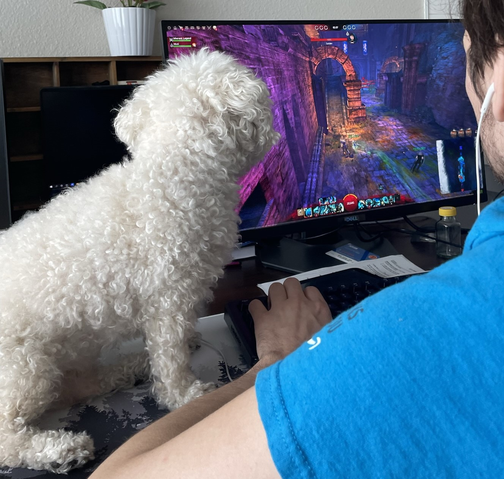
Competitive Gaming Strategy
Competitive Gaming Strategy
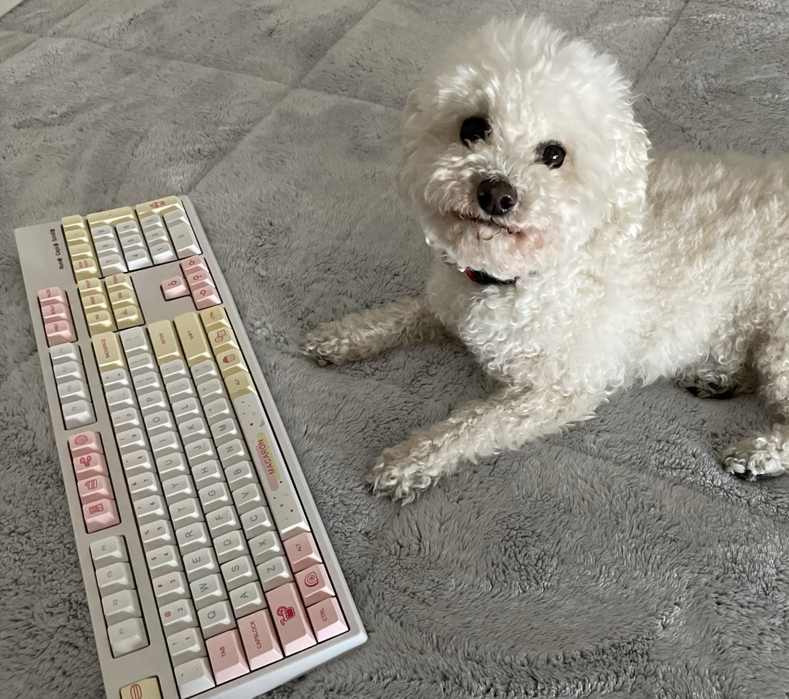
Data Entry
Data Entry
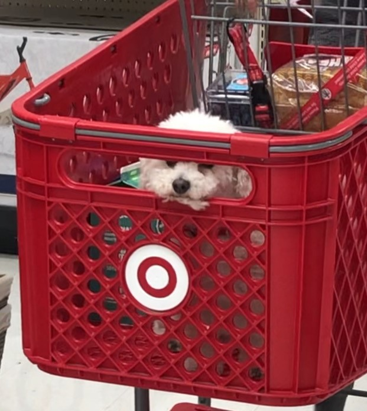
Loss Prevention and Security
Loss Prevention and Security
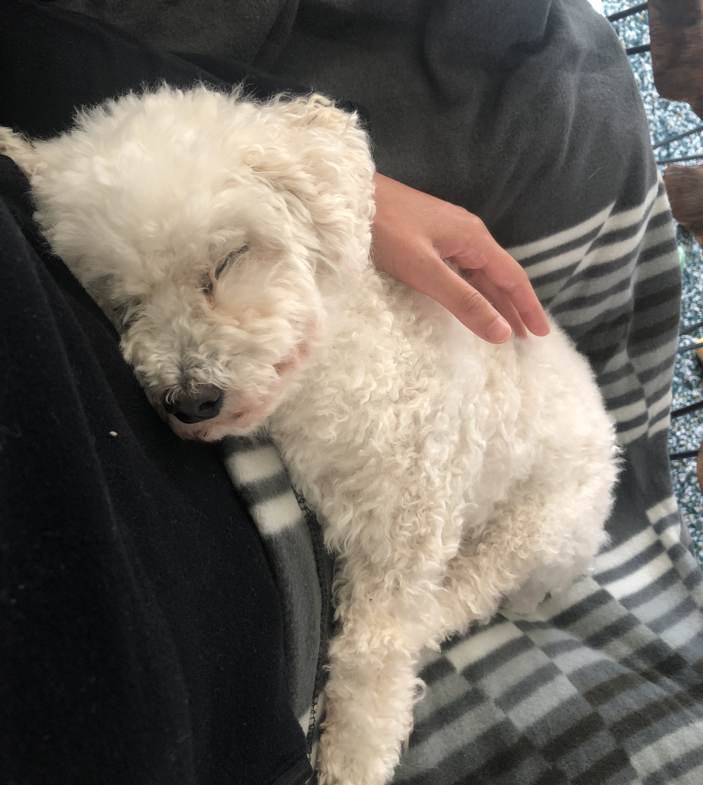
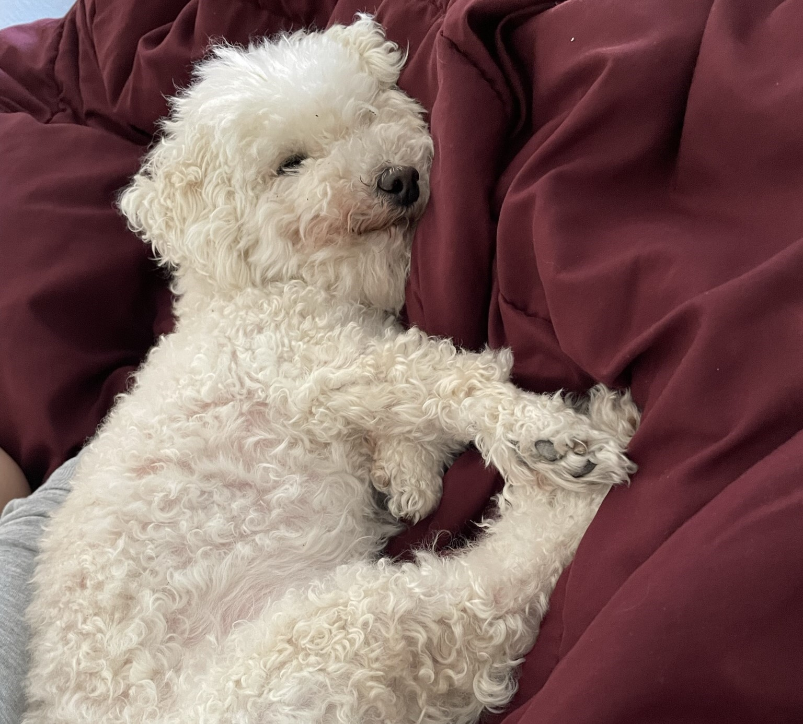
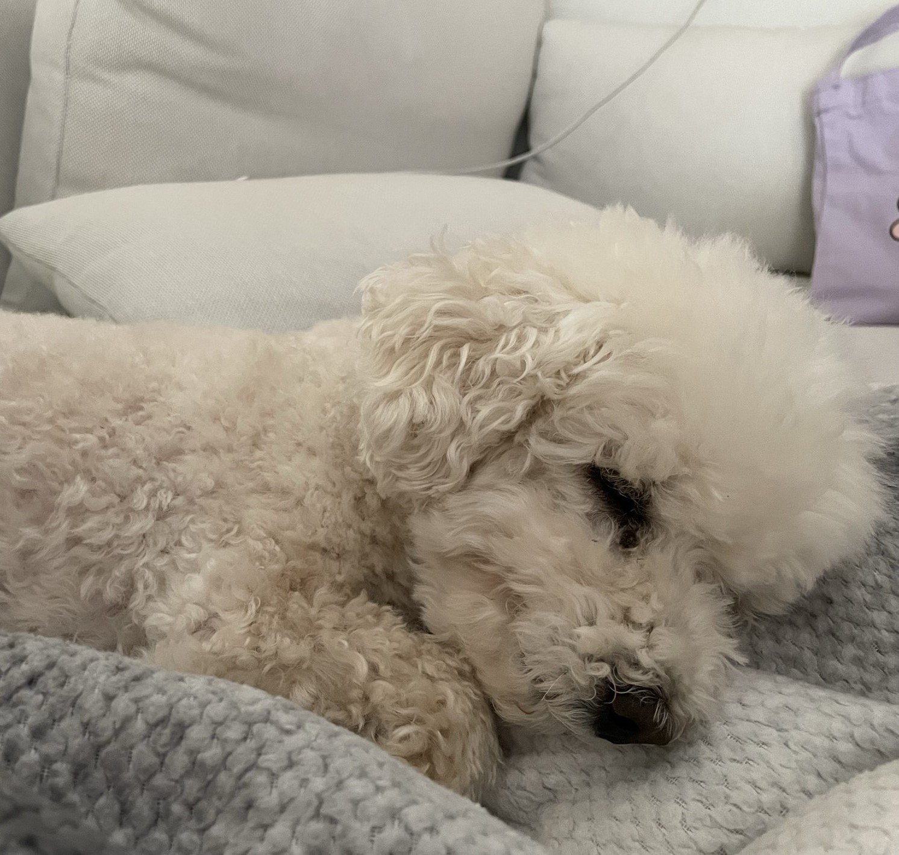
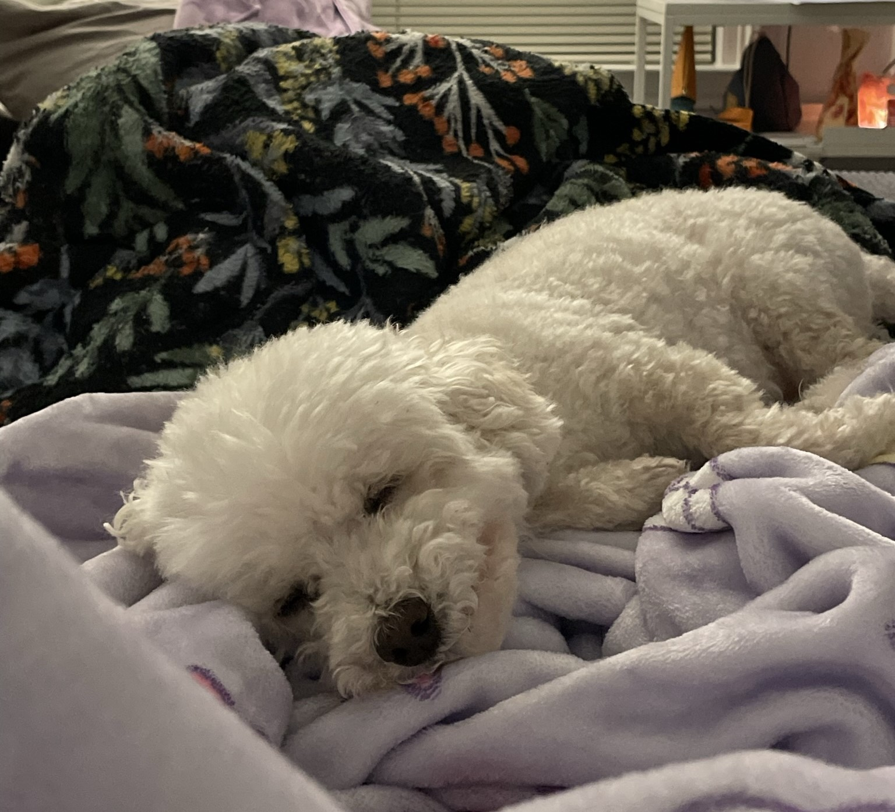
... and is the world's leading expert in the science of Napping.
CheddarCon 2023 Spotlight
A frequent guest of CheddarCon, Malf is Cheddar's brother [1] and manages CheddarCon.com operations and customer support. He is an experienced hardware and technical support professional, with additional expertise in residential security and maintenance.
[1]Unsupported claims, according to Cheddar.
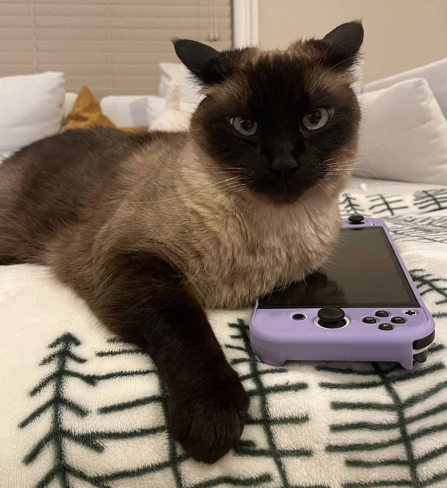
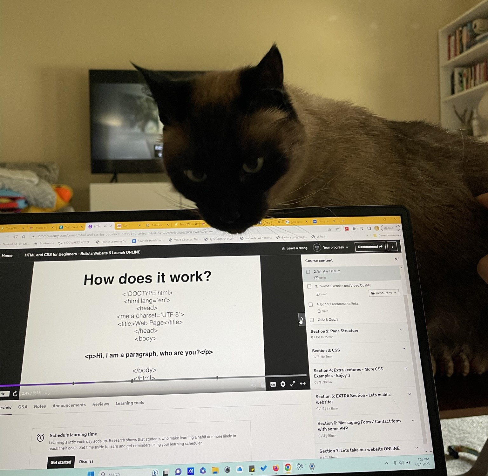
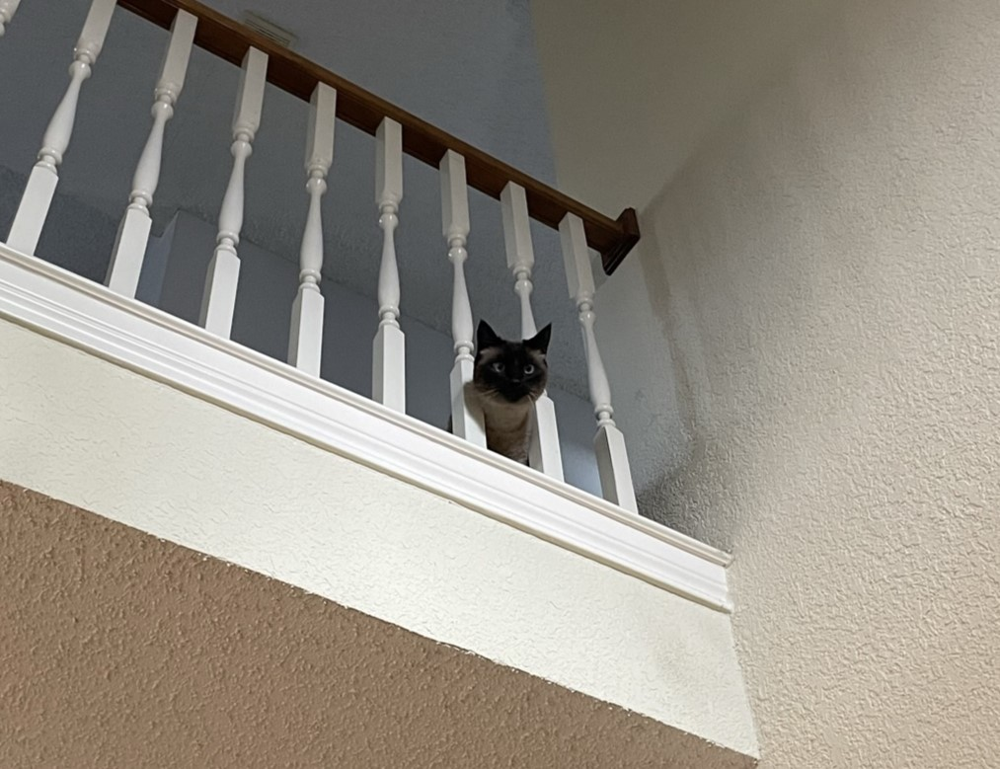
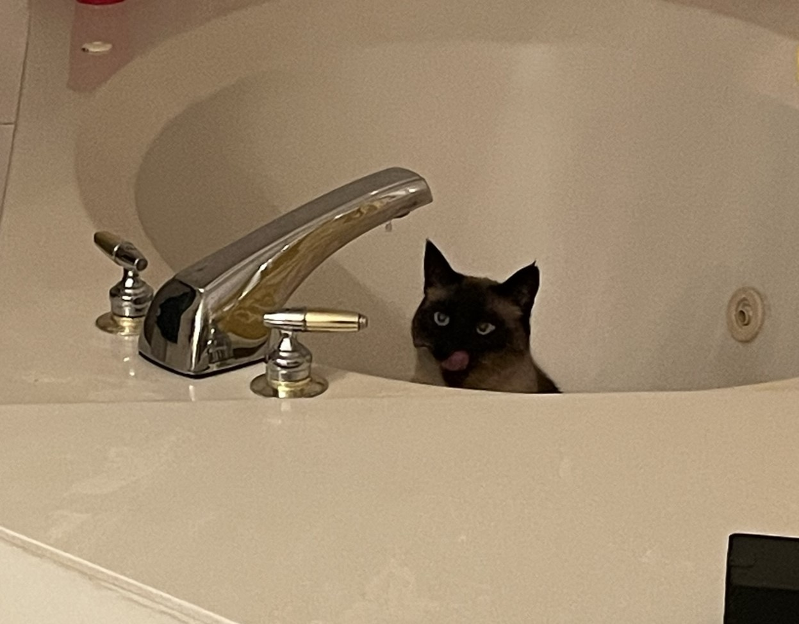